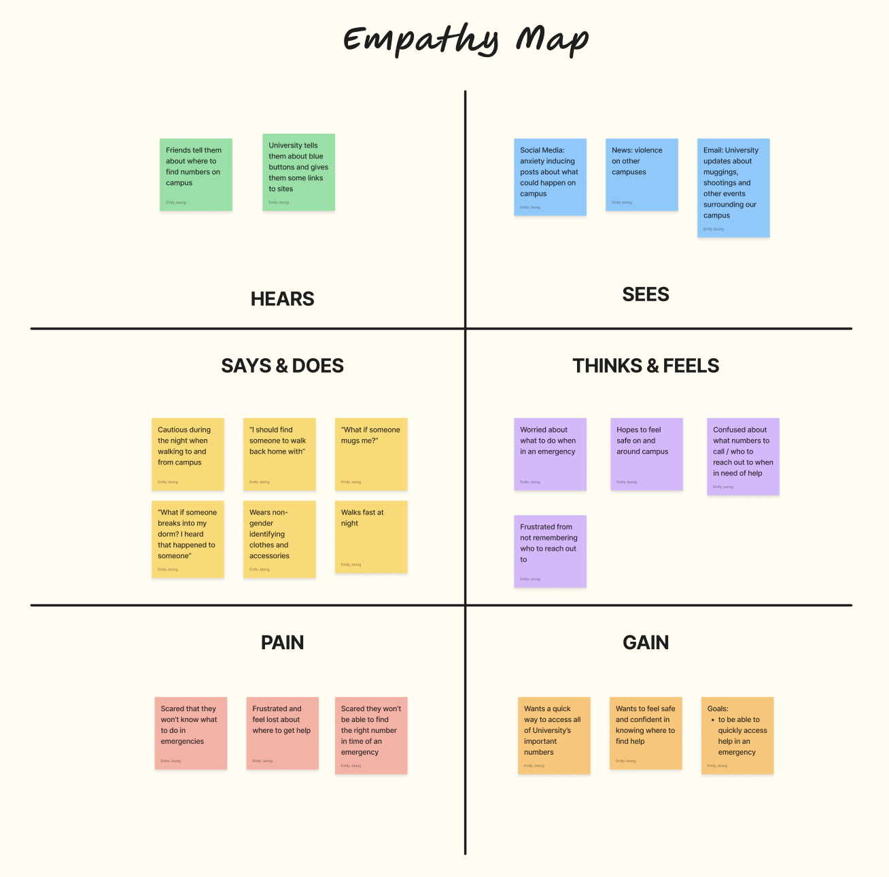

Genessee Valley was a class project for a Mobile App Development course. We were required to create a mobile game using SpriteKit.
Problem
Learning Computer Science logic is hard, but learning CS logic through games is fun and motivating.
My Role
Game Designer, Game Asset Creator, 2D Pixel Artist, SpriteKit Coder, Swift Developer
Project Timeline
2 weeks in November 2023
Defining the Problem
Problem
College students don’t feel safe when walking back from campus to their dorms especially at night. There are campus resources available such as emergency numbers (MERT, Public Safety etc) and blue light boxes, but students might not have these numbers saved and blue light boxes are not always readily available.

Empathy Map
Interviews
In order to understand the audience, interview questions were made. For example:
Are you familiar with emergency resources (MERT, UHS, UCC, Public Safety)? If so how did you first become familiar with them?
Imagine you’re in a high stress situation on campus, and you need to act fast. What do you do first?
How confident are you that you would know what to do in an emergency on campus?
How do you feel about calling campus emergency resources? How easy/hard is it for you to find those resources?
If there was an app for university emergency resources, what would you want to see?